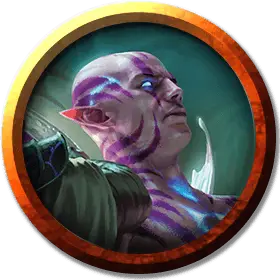

Гибрид-отравитель
Hybrid Poisoner
Средний Гуманоид (Гибрид Симиков), нейтрально-добрый

Класс Доспеха 14
Хиты 26 (4к8 + 8)
Скорость 40 футов
| мод | спас | ||
|---|---|---|---|
| СИЛ | 12 | +1 | +1 |
| ЛОВ | 19 | +4 | +6 |
| ТЕЛ | 14 | +2 | +4 |
| мод | спас | ||
|---|---|---|---|
| ИНТ | 12 | +1 | +1 |
| МДР | 13 | +1 | +1 |
| ХАР | 12 | +1 | +1 |
Навыки Атлетика +3, Восприятие +3, Скрытность +6
Иммунитет к урону яд
Иммунитет к состояниям отравление
Чувства тёмное зрение 30 футов, пассивное Восприятие 13
Языки Общий, плюс один язык
Опасность 1 (200 опыта)
Бонус мастерства +2
Особенности
Убийство. В свой первый ход гибрид-отравитель совершает с преимуществом броски атаки против любого существа, которое не делало хода. Любое попадание гибрида по захваченному врасплох существу считается критическим попаданием.
Ядовитая кожа. Любое существо, которое касается гибрида или попадает по нему рукопашной атакой, находясь в пределах 5 футов от него, получает 3 (1к6) урона ядом.
Действия
Токсическое прикосновение. . Рукопашная атака оружием: +6 к попаданию, досягаемость 5 фт., одна цель. Попадание: 7 (2к6) дробящего урона, и цель должна преуспеть в спасброске Телосложения Сл 12, иначе станет отравленной на 1 минуту. В конце каждого хода отравленная цель должна повторять спасбросок, получая 3 (1к6) урона ядом при провале, при успехе цель перестает быть отравленной.
Описание
Проект «Страж» является следствием растущей напряженности в Синдикате Симиков по мере того, как надвигается угроза конфликта между гильдиями. Полагая, что симики должны быть готовы сражаться за свою жизнь, когда этот конфликт достигнет апогея, биоманты создали солдат, чтобы помочь защитить гильдию. Эти гибриды (также называемые стражами, по названию проекта) создаются из людей, ведалкенов и членов гильдии эльфов, которые добровольно трансформируются.